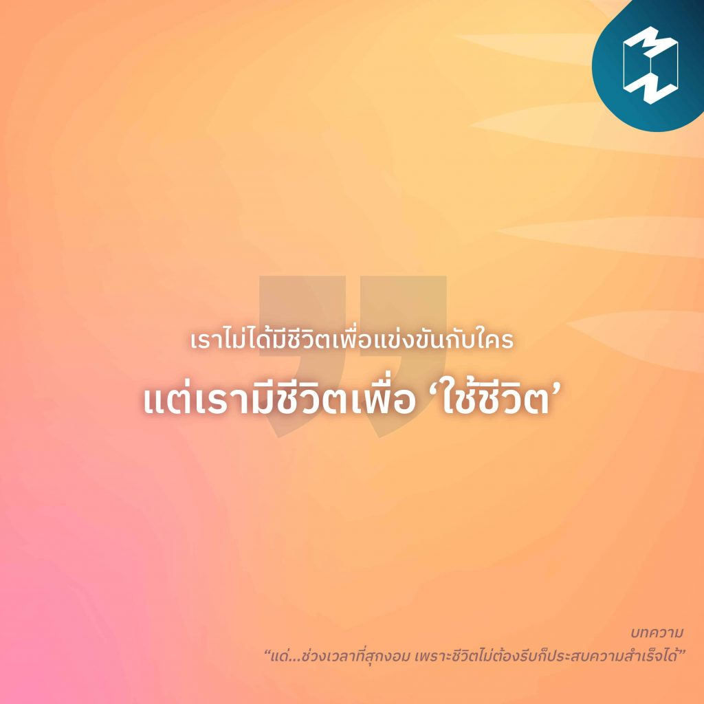

4)“เราไม่ได้มีชีวิตเพื่อแข่งขันกับใครแต่เรามีชีวิตเพื่อ‘ใช้ชีวิต’”
เพราะความสำเร็จของคนรอบตัว และค่านิยมที่คอยกำหนดว่า ‘อายุเท่านี้ควรมีเท่าไหร่’ อาจทำให้เราเร่งรีบในการพัฒนาตนเอง สร้างความสำเร็จในหน้าที่การงานจนลืมหา ‘ความสุข’ จากการมีชีวิตอยู่ เรียนรู้ที่จะใช้ชีวิตและประสบความสำเร็จแบบไม่รีบร้อน ในบทความ “แด่…ช่วงเวลาที่สุกงอม เพราะชีวิตไม่ต้องรีบก็ประสบ